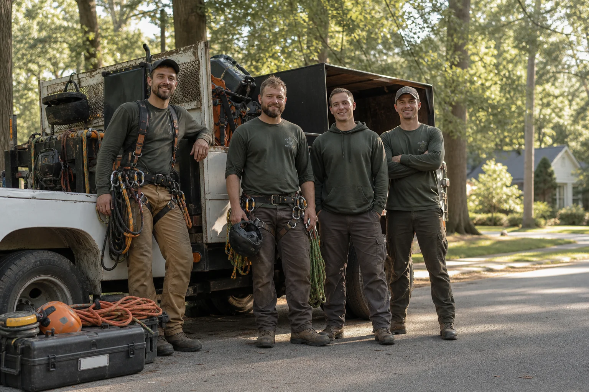

A connection service for homeowners facing tree problems.
ArborLine Connect is not a contractor and does not perform tree work. We help homeowners find independent local providers who may be able to respond quickly and safely.

Built to make urgent tree requests easier to route.
ArborLine was created for homeowners who do not know where to start when a tree is leaning, storm debris blocks access, a stump delays a yard project, or brush cleanup becomes too much to manage alone.
Instead of presenting ourselves as the crew doing the work, we operate as an aggregator. Our site collects the basic details of a tree-related request and helps connect homeowners with local independent service providers. The provider, not this site, is responsible for estimates, licenses, insurance, scheduling, safety practices, and completed work.
Our role is to reduce the friction of describing the same issue repeatedly. A clear request can include the tree location, access limits, visible damage, urgency level, photos, cleanup expectations, and the type of property affected.
How we think about requests
- Start with the homeowner's safety concern or access problem
- Organize the request into a practical provider category
- Keep the homeowner responsible for final contractor verification
- Avoid promising response times, pricing, workmanship, or availability
What makes the site different
ArborLine is designed as a simple connection layer. It helps homeowners prepare a better request, while independent providers remain responsible for estimates, scheduling, insurance, licensing, jobsite decisions, and completed work.
Provider categories built around real tree problems.
The site organizes requests by the type of issue homeowners usually need help describing: removal, pruning, storm cleanup, stump grinding, brush removal, lot clearing, and tree health concerns.
Each category is a connection path, not a direct service offering from ArborLine. Independent providers decide whether they can respond, quote, schedule, and perform the work.
Common request groups
- Urgent hazards: leaning trees, split trunks, fallen limbs, blocked access, and storm debris
- Tree care: pruning, clearance trimming, structural concerns, and visible health symptoms
- Cleanup and clearing: stumps, brush piles, overgrowth, lot clearing, and haul-away needs
What homeowners should prepare
Useful details include approximate tree size, where the issue is located, whether structures or utilities are nearby, how providers can access the area, whether debris removal is needed, and whether the request feels urgent.
View provider categories